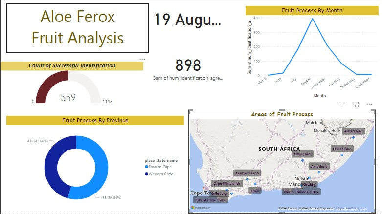
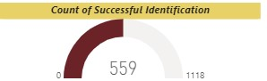

Learn more about the fruiting stage, a crucial phase in the Aloe Ferox lifecycle where mature flowers transform into fruits.
More Info

Process of Aloe Ferox fruit development.Areas showing the fruiting process of Aloe Ferox.Output showing the results of fruiting stage observations.

Counting and identifying the Aloe Ferox fruits.